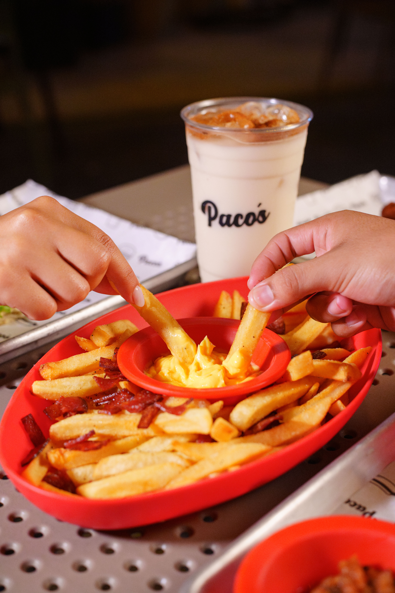

Volver al Inicio


 Volver al Inicio
Volver al Inicio
Fotografía
Fotografía de producto, comercial y creativa
Descripción del Proyecto
Sesiones fotográficas profesionales que abarcan fotografía de producto, comercial y creativa. Cada imagen es cuidadosamente iluminada y compuesta para transmitir la identidad de la marca y generar impacto visual. Se trabaja con fondos limpios, iluminación controlada y edición profesional para lograr resultados de alta calidad que impulsen las ventas y fortalezcan la presencia visual del negocio. Desde campañas publicitarias hasta catálogos de producto, cada proyecto se aborda con un enfoque creativo y profesional.
Galería

Herramientas Utilizadas
Adobe Photoshop
Adobe Lightroom
Cámara DSLR
Iluminación de Estudio
Fondos Profesionales
Reflectores